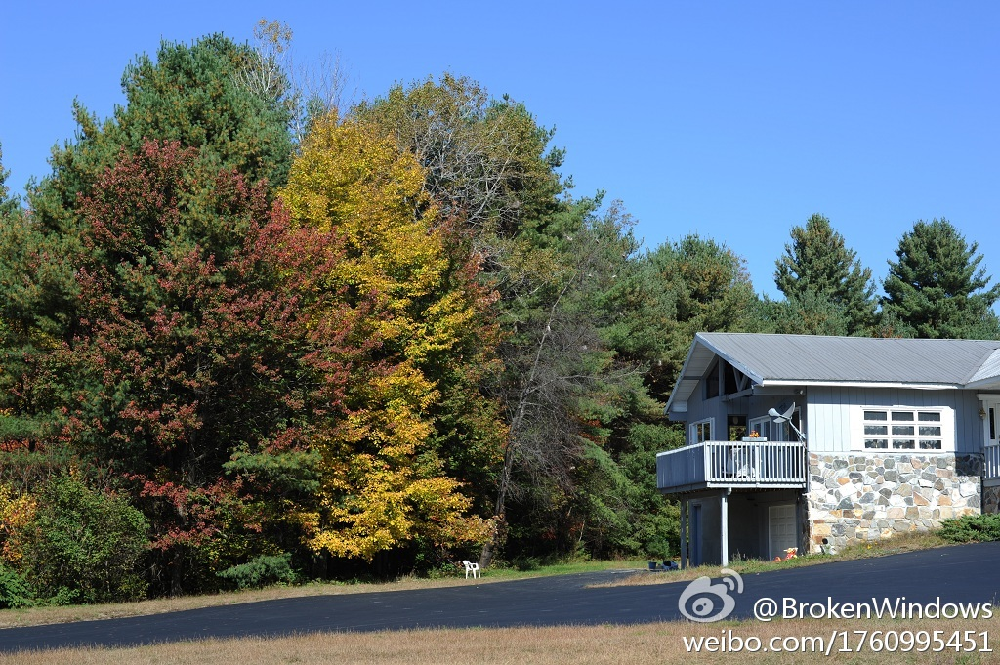

国外房子后续..... //@BrokenWindows: 这里基本没有就业机会,所以年轻人很少.年纪太大了没有力气维护房子的话,也会没法生活下去.医生也少,没有公立医院.冬天很冷,年轻人可能会觉得不错,因为旁边有两个著名的雪场,而老年人就会很难挨.最近的镇子在Saratoga,开车要40分钟,想吸点儿人气儿就只能去那儿
@BrokenWindows:
真的要在这里买房子?冷静...!首先,每年1.1%的房产税是跑不了的,如果是湖边的房子还要加倍;州政府和当地政府的各项税费也是名目繁多.这些总共加起来20多万的房子一年要交4000多.而且房子要自己维护,这儿可没有物业公司,每年都要修葺几次,水电煤气的故障自己解决.木头自己砍,砖头自己垒.
- 